브롤스타즈 거스 찾기 연구실 공략, 라이트건 제작부터 파이퍼 핀·카오스 드롭까지 브롤로윈 3단계
브롤로윈 거스 찾기(#FindGus)가 입구와 복도를 지나 3단계 연구실(Laboratory)까지 열렸는데요, 이번 단계는 단서를 찾는 것보다 색 섞기와 순서 맞추기가 중심이라 막히는 자리가 앞 단계와 많이 달라요. 그래서 라이트건 제작부터 색 혼합 두 라운드, 파이퍼(Piper) 조립, 보너스 핀과 복도 금고까지 순서대로 모아 봤습니다. 1~2단계(입구·복도)는 「브롤스타즈 거스 찾기 공략, FindGus 입구 퍼즐부터 복도 데미안 핀까지 브롤로윈 2026」 글에 따로 정리해 뒀으니 앞 단계가 헷갈리시면 그 글부터 보고 오시면 편하실 거예요~
연구실 공략 순서만 먼저 보면 이렇게 돼요
연구실은 라이트건을 만들고, 색을 섞어 파이퍼를 조립한 뒤, 두 번째 색 혼합으로 마무리해 카오스 드롭을 받는 구조예요.
- 오른쪽 작업대에서 라이트건 부품 3개를 모아 합칩니다.
- 라이트건으로 버너에 불을 붙입니다.
- 1라운드 색 4가지를 섞어 칸에 쏩니다.
- 나온 부품 4개로 파이퍼를 조립하고 제너레이터를 순서대로 누릅니다.
- 2라운드 색 4가지를 섞어 한 번 더 쏩니다.
- 새로 나온 제너레이터 순서대로 한 번 더 누릅니다.
- 마지막 대화에서 카오스 드롭을 받습니다.
| 어디서 | 받는 것 |
|---|---|
| 연구실 클리어 | 카오스 드롭 |
| 보너스: 핀 칸 채우기 | 파이퍼 핀 |
| 복도 보너스: 시계 3:00 | 스타 드롭 |
| 복도 보너스: 숨은 금고 | 파워 포인트(Power Points) 100개 |
카오스 드롭은 연구실 마지막 대화에서 받고, 나머지 셋은 별도 보너스예요. 핀만 연구실 안에서 2라운드 직전에 챙기는 타이밍형이라, 보너스까지 욕심내신다면 핀을 먼저 염두에 두고 진행하시는 게 좋아요.
연구실은 어떻게 열리나요
연구실은 입구와 복도 퍼즐을 클리어하고 해금일(10월 5일)에 전투 3승을 채우면 열려요. 10월 5일은 월요일이었는데요, 해외 공략 사이트에서 이 조건으로 안내하고 있어서 문이 안 열린다면 앞 단계 클리어 여부와 해금일 승수부터 세어 보면 되죠.
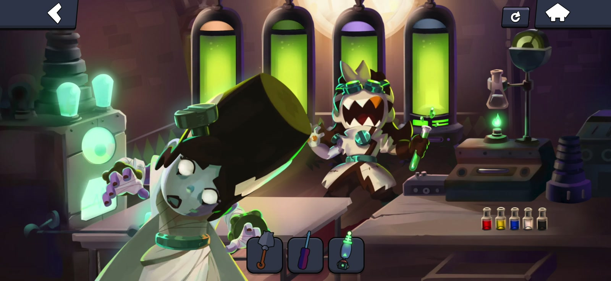
라이트건과 파이퍼까지 완성된, 연구실을 마무리하기 직전 화면이에요. (출처: brawlnetwork)
라이트건 부품 3개는 어디서 찾나요
라이트건 부품 3개는 전부 오른쪽 작업대 근처에 있어요.
- 믹싱 머신 왼쪽의 전기 장치를 탭합니다.
- 맨 오른쪽의 높은 코일을 탭합니다.
- 오른쪽 작업대 아래 서랍을 엽니다.
세 개를 다 모으면 인벤토리에서 끌어 합쳐 라이트건을 완성하는데요, 이 총이 연구실 내내 열쇠 역할을 하고 복도 보너스에서도 다시 쓰이거든요. 그러니 인벤토리에 계속 남겨 두세요.
벨(Belle)이 무기 부품부터 찾아 달라고 하는 장면이에요. (출처: brawlnetwork)
버너 점화와 1라운드 색 혼합은 어떻게 하나요
라이트건으로 매달린 비커 아래 버너에 불을 붙인 뒤, 병 색을 섞어 4개 칸에 맞는 색을 만들면 1라운드가 시작돼요.
병은 빨강·노랑·파랑·흰색·검정 다섯 가지가 오른쪽 선반에 놓여 있고, 조작은 병을 비커로 끌어 넣고 → 비커를 탭하고 → 만들어진 시험관을 칸 슬롯에 넣고 → 라이트건으로 쏘는 순서입니다. 1라운드는 칸마다 재료가 두 가지씩이라 부담이 적고, 2라운드부터 세 가지씩으로 늘어나요. 흰색은 분홍이나 라벤더처럼 밝고 연한 색에, 검정은 올리브나 슬레이트처럼 어두운 쪽에 들어가니까 칸 색감만 봐도 재료가 어느 정도 그려지죠. 막히기 쉬운 지점도 바로 이 흰색·검정 칸이라, 헷갈리면 칸이 밝은 색인지 어두운 색인지부터 보시면 돼요.
| 칸 | 만들 색 | 재료 |
|---|---|---|
| 1번 | 주황 | 빨강 + 노랑 |
| 2번 | 초록 | 노랑 + 파랑 |
| 3번 | 보라 | 빨강 + 파랑 |
| 4번 | 분홍 | 빨강 + 흰색 |
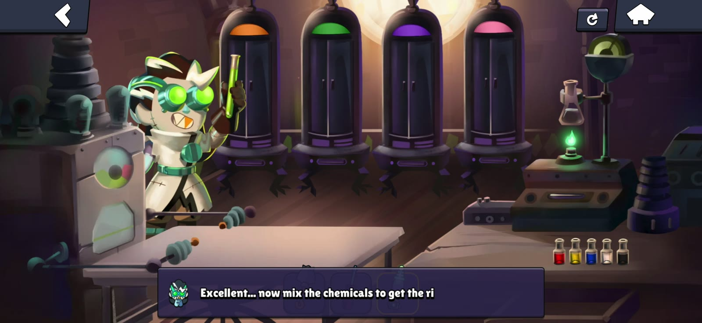
버너가 켜지면 칸 위에 네 가지 색이 보여요. (출처: brawlnetwork)
파이퍼 조립과 제너레이터 순서는 어떻게 하나요
1라운드를 쏘면 칸에서 머리·팔·다리·몸통 4부품이 나오는데, 이걸 왼쪽 테이블로 옮겨 조립한 다음 벨이 알려 주는 숫자 순서대로 제너레이터 패널을 터치하면 돼요.
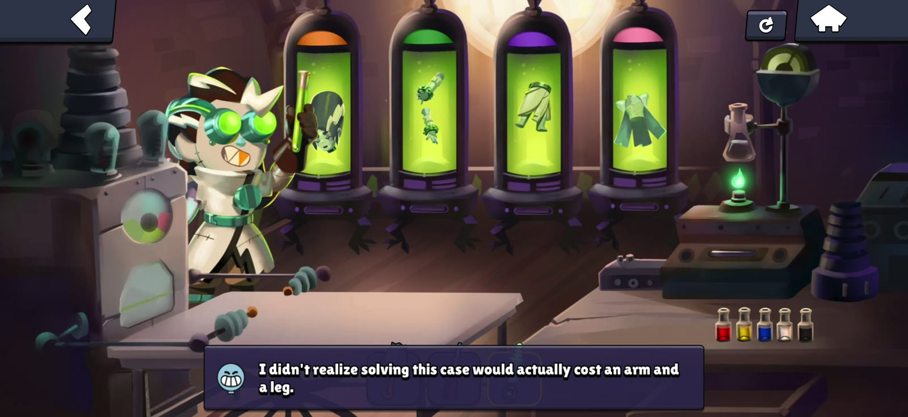
칸마다 부품이 하나씩 떠올라요. (출처: brawlnetwork)
이 순서는 무작위라서 라운드마다 달라요. 첫 예시 화면에서는 1→4→3→2로 나왔는데요, 어디까지나 예시일 뿐이니 벨의 대사에 나오는 숫자를 그대로 따라가는 게 맞아요.
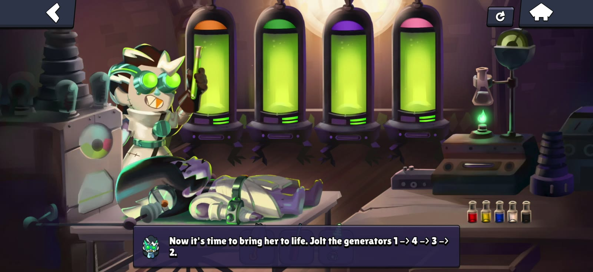
순서는 이렇게 대사로 알려 줘요. (출처: brawlnetwork)
파이퍼 핀은 어떻게 받나요
파이퍼 핀은 2라운드에 들어가기 전, 4개 칸에 아래 재료를 쏘지 않고 담아 두면 칸 아래에 나타나요.
| 칸 | 재료 |
|---|---|
| 1번 | 빨강 + 흰색 |
| 2번 | 빨강 + 노랑 + 흰색 |
| 3번 | 빨강 + 파랑 + 흰색 |
| 4번 | 파랑 + 검정 |
이 재료표는 brawlnetwork 기준이고, 4번 파랑+검정은 다른 공략의 색 이름과 맞춰 본 값이라 인게임 색이 다르면 화면 쪽을 따르세요. 보너스 보상이라 타이밍은 2라운드 직전뿐이니 챙기실 생각이라면 이 구간에서 하는 게 좋답니다.
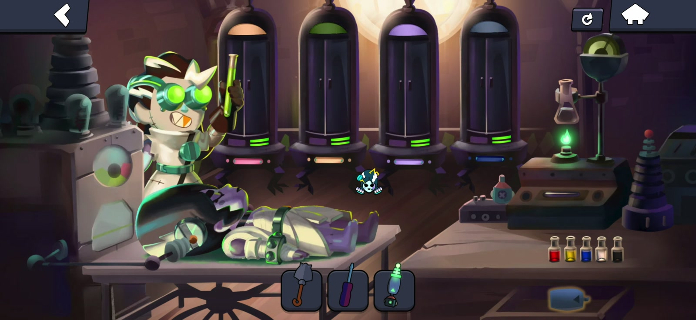
칸을 다 채우면 가운데에 핀이 떠올라요. (출처: brawlnetwork)
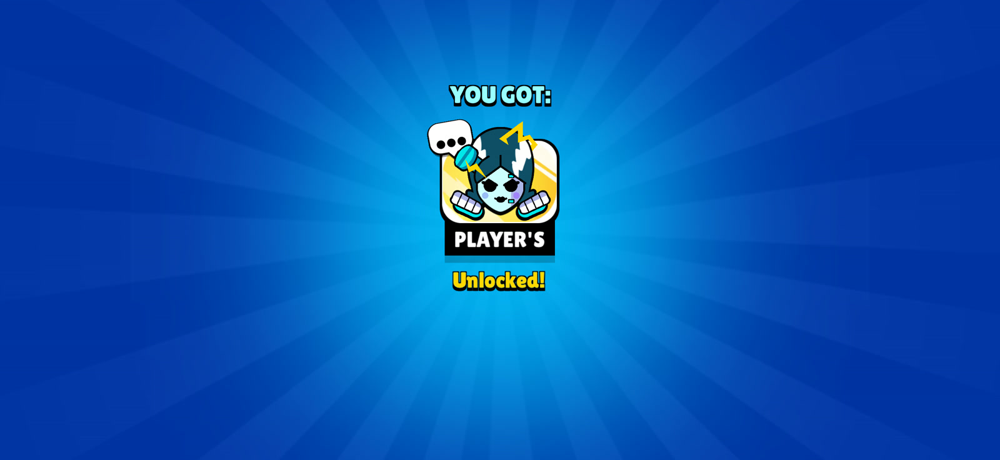
핀을 얻으면 이런 획득 화면이 나와요. (출처: brawlnetwork)
2라운드 색 혼합과 카오스 드롭은 어떻게 받나요
2라운드는 재료가 3색으로 늘어난 같은 방식이고, 4개 칸을 다 채워 쏜 뒤 마지막 대화에서 카오스 드롭을 받으면 끝이에요.
| 칸 | 만들 색 | 재료 |
|---|---|---|
| 1번 | 복숭아색 | 빨강 + 노랑 + 흰색 |
| 2번 | 올리브색 | 노랑 + 파랑 + 검정 |
| 3번 | 라벤더색 | 빨강 + 파랑 + 흰색 |
| 4번 | 슬레이트색(어두운 청회색) | 파랑 + 흰색 + 검정 |
색을 바꿔 쏜 뒤에는 벨이 새로 무작위 순서를 알려 주고, 그 순서대로 제너레이터 패널 네 개를 라이트건으로 한 번 더 눌러야 해요. 앞에서 나온 순서와는 다르니 새 숫자를 따라가는 게 맞습니다.
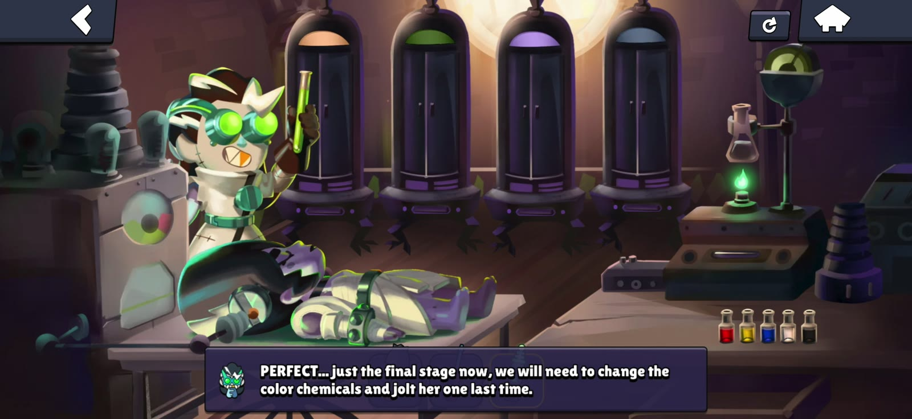
마지막 단계라는 안내와 함께 칸 색이 바뀌어 있어요. (출처: brawlnetwork)
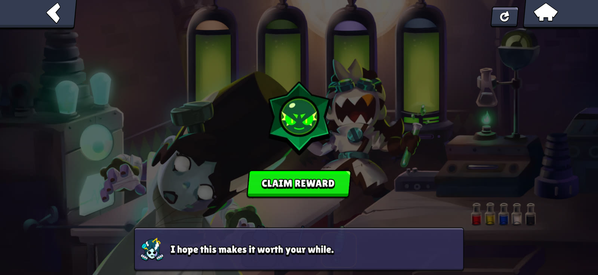
보상 받기를 누르면 카오스 드롭이 들어와요. (출처: brawlnetwork)
복도 보너스 ① 시계 3:00은 어떻게 맞추나요
복도에서는 벽 촛불을 라이트건으로 켜고 → 괘종시계를 3시 정각으로 맞추고 → 켜진 촛불을 당기는 순서로 스타 드롭이 나와요. 이 순서는 해외 공략 두 곳이 똑같이 안내해요. 시계만 맞췄는데 반응이 없다면 촛불 단계부터 확인해 보세요. 아래 화면에도 촛불이 이미 켜져 있고 라이트건 슬롯이 선택된 모습이 보여요. 시계는 아래 삼각 버튼으로 바늘을 돌려서 짧은 바늘을 3, 긴 바늘을 12에 맞추면 되는데, 바늘 두 개의 위치를 번갈아 보면서 천천히 돌리셔도 괜찮답니다.
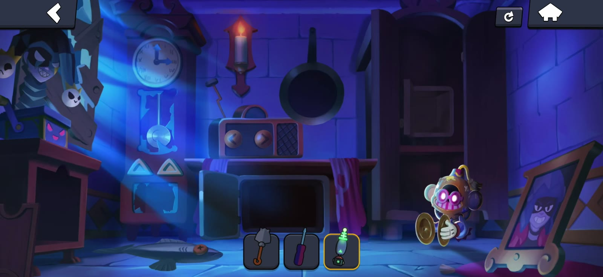
바늘이 3시 정각이면 성공이에요. (출처: brawlnetwork)
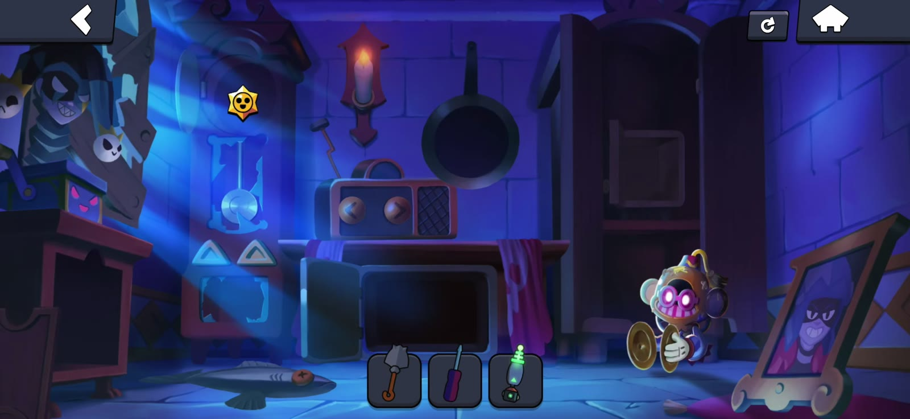
시계 자리에 스타 드롭이 떠올라요. (출처: brawlnetwork)
복도 보너스 ② 라디오 채널 10과 금고 코드는 뭔가요
복도의 수리된 라디오에 라이트건을 쏘고 오른쪽 화살표로 채널을 10까지 올리면 벽 속에 숨은 금고가 나타나요. 금고는 네 모서리를 아래 색으로 맞추면 열리고, 안에는 파워 포인트(Power Points) 100개가 들어 있어요.
| 금고 위치 | 색 |
|---|---|
| 왼쪽 위 | 빨강 |
| 오른쪽 위 | 노랑 |
| 왼쪽 아래 | 보라 |
| 오른쪽 아래 | 흰색 |
참고로 '파워 포인트'는 인게임 한국어 표기를 확인하지 못해 영문을 함께 적었어요. 실제 게임 속 표기는 확인 필요입니다.
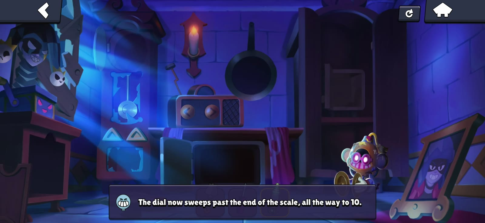
다이얼이 10까지 올라가면 벽에 변화가 생겨요. (출처: brawlnetwork)
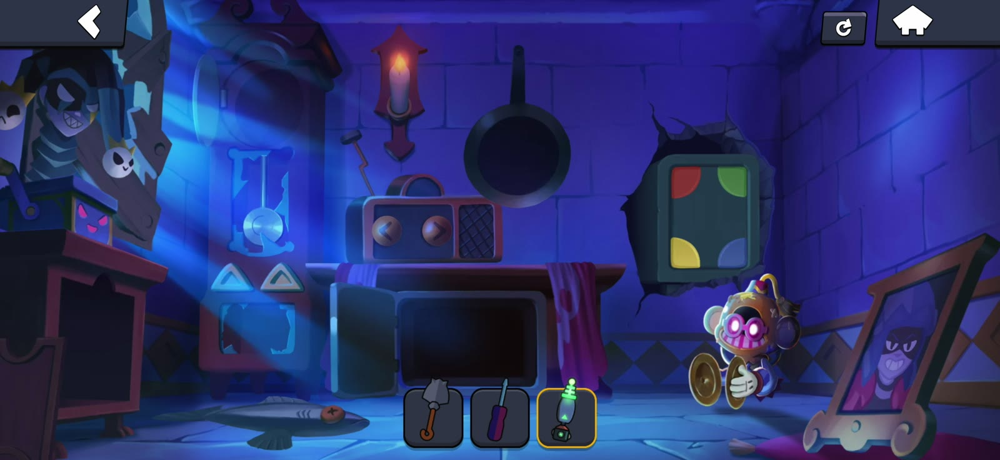
처음 나온 금고는 색이 제각각이라 위 표대로 맞춰야 해요. (출처: brawlnetwork)
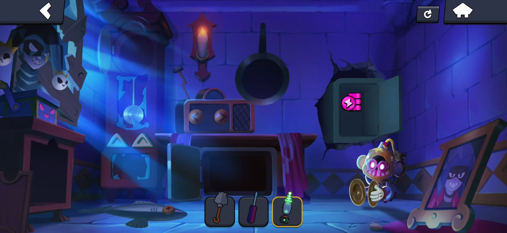
금고를 열면 파워 포인트가 나와요. (출처: brawlnetwork)
자주 묻는 질문
Q. 핀 보너스를 놓치면 어떡하나요?
2라운드로 넘어간 뒤에 되돌아가서 받는 방법은 확인하지 못했어요. 핀이 필요하시면 2라운드 직전에 칸부터 채우는 편이 마음 편하죠.
Q. 라디오가 반응을 안 해요.
아직 수리가 안 된 라디오일 수 있어요. 라디오 수리는 안테나를 달고 드라이버로 조이는 것이고, 라이트건은 수리가 끝난 라디오에 쓰는 도구예요. 수리를 마친 뒤 인벤토리에서 라이트건을 선택하고 라디오를 터치해 보세요.
Q. 복도 보너스 세 가지는 어디서 하나요?
시계, 라디오, 금고 모두 복도 한 화면 안에 다 있잖아요, 그래서 화면을 옮겨 다닐 필요가 없어요. 금고는 나타난 직후 왼쪽 위만 이미 빨강이라 나머지 세 모서리만 바꾸면 됩니다.
브롤스타즈 거스 찾기 연구실 정리
정리하면 라이트건 제작 → 1라운드 색 혼합 → 파이퍼 조립과 제너레이터 → 핀 칸 적재 → 2라운드 색 혼합 → 두 번째 제너레이터 → 카오스 드롭 순서이고, 복도에서는 촛불과 시계 3:00, 라디오 채널 10 금고로 보너스까지 챙길 수 있어요. 순서는 무작위여도 벨의 대사 숫자만 따라가면 되니까 크게 어렵지 않을 거예요~
참고한 곳 (2026.10.07 기준)
· 브롤스타즈 공식 블로그 — 2026년 8월 릴리스 노트
해외 공략 사이트
· Brawl Network — Find Gus Laboratory
· The Click — Find Gus Laboratory
✔ 브롤스타즈 같이 보기 좋은 내용
· 브롤스타즈 할로윈 이벤트 정리, 시즌55 브롤로윈 신규 브롤러 빈스 스킨 획득처까지